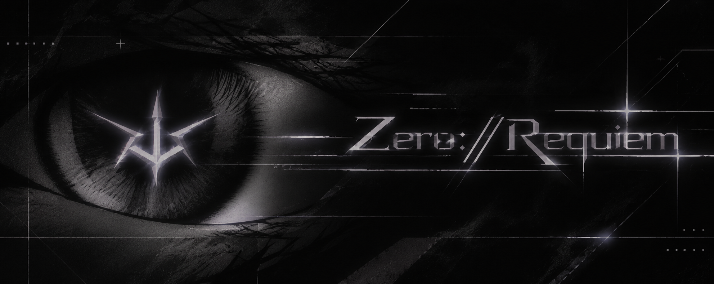
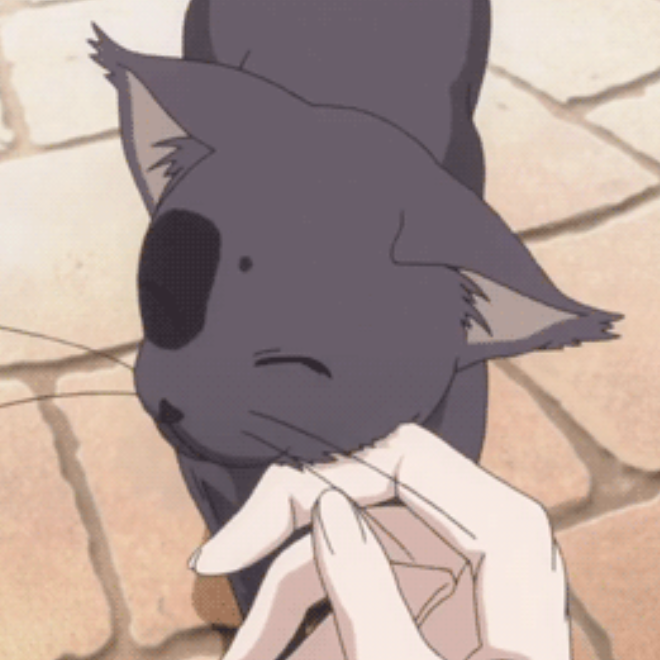
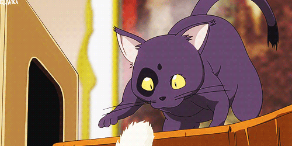
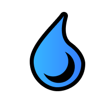
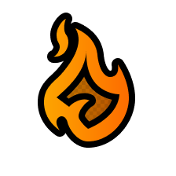
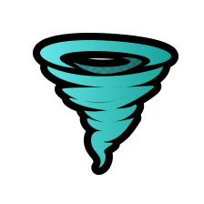
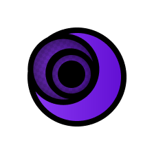

Access
01
Verify once with Discord, then the server roles are handled automatically.
A private Discord community built around clear rules, fast support, and a small staff team that actually shows up. Verify with Discord to unlock the server, or check the moderator area if you manage it.

Three rules, one staff team, and tools that keep the server quiet instead of noisy.
Verify once with Discord, then the server roles are handled automatically.
Private tickets keep reports, appeals, and general questions in one clean place.
Case files, logs, and staff tools stay organized without cluttering public channels.
Ten tracks from the Zero://Requiem rotation. Use the player pinned at the bottom to control playback.

The bot that keeps Zero://Requiem running. No clutter, no spam — just the systems the server actually needs.

A persistent rules panel with one acceptance button. Verified is assigned instantly and repeat clicks stay clean.
Nine element roles — Hydro, Gale, Terra, Flame, Storm, Light, Dark, Neutral and Plasma — picked from one reaction panel.
Passive XP from chat and voice, level-up announcements with milestones, and no commands to remember.
One click opens a duo, trio, quad or general room with clean access selection, ordering, and automatic cleanup.
Private channels with a reason form, staff claim, close reasons, and downloadable text transcripts.
Forum case threads that stay open after a ban, plus message, voice, command and deploy logs in their own channels.
Live counters for members, roles and the Division0 capacity flag, including the exact `max: true/false/???` state.
A silent trap channel that flags accounts attempting to post where they should not.
The self-role icons used across Zero://Requiem.



